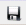

Para realizar o cadastro de Ajustes selecione no menu Cadastro a opção "Ajustes". e selecione a
opção desejada:
· Condição de Pagamento,
· Unidade de Medida,
· Grupo de Produto,
· Região,
· Transportadora
A tela do cadastro selecionado será aberta.
Deve-se preencher todos os campos em negrito que são os campos obrigatórios.
Os campos que não estão em negrito são opcionais
Ao preencher todos os campos da tela, clicar no botão Salvar.
Barra de botões do Cadastro:
Botão é o Pesquisar ,
ele mostra a opção realizar um consulta simples entre os clientes já
cadastrados.
Botão Incluir, ao clicar nesse botão é habilitado a cadastro para inclusão de um novo
registro.
 Botão Salvar, ao preencher todos os campos clicar nesse botão para realizar a gravação do
registro no Banco de Dados.
Botão Cancelar, ao clicar nesse botão é cancelada qualquer ação que tenha sido iniciada
Botão Editar, ao clicar nesse botão é habilitada a edição dos campos do registro que está
sendo exibido na tela.
Botão Deletar, ao clicar nesse botão é excluído o registro que está sendo exibido na tela.
Botão Navegação para Direita, nesses botões é feita a navegação dos registros em
sentido ao primeiro registro gravado.
Botão Navegação para Esquerda, nesses botões é feita a navegação dos registros em
sentido ao último registro gravado.
Botão Voltar para tela Inicial.
Possíveis Erros:
Ao clicar no botão Salvar, se o sistema identificar algum erro de preenchimento no cadastro, será
exibido uma mensagem explicativa do erro e indicando em que campo se encontra o erro.